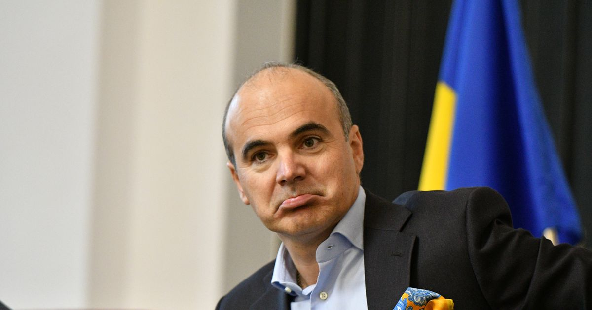

Rareș Bogdan
Informații Personale
- Data Nașterii: 1 aprilie 1975
- Locul Nașterii: Oradea, România
- Naționalitate: Română
Controverse
- Accuzații de Rasism: În 2019, Rareș Bogdan a fost acuzat de rasism după ce a făcut o serie de declarații controversate la adresa romilor.
- Accuzații de Sexism: În 2018, Rareș Bogdan a fost acuzat de sexism după ce a făcut o serie de comentarii jignitoare la adresa femeilor.
- Cercetat penal În 2019, Rareș Bogdan a fost cercetat penal si acuzat că nu ar fi gestionat corespunzător sumele cuvenite la Realitatea Media, din contractele de publicitate.În mai 2020, Tribunalul București a dispus încetarea procesului penal în dosarul legat de campusul social, pe motiv că faptele s-au prescris.
Activități Politice
- Afilieri Politice: Partidul Național Liberal (PNL)
- Ani de Activitate: 2019 - Prezent
- Pozitii deținute:
- Europarlamentar (2019 - Prezent)
Educație
- Grad: Licențiat în Jurnalism
- Instituție: Universitatea din București
- An: 1993 - 1997
Experiență Profesională
- Organizație: Realitatea TV
- Poziție: Jurnalist
- An: 2002 - 2019